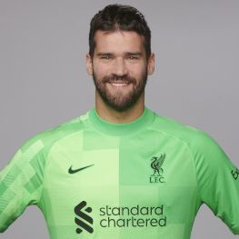
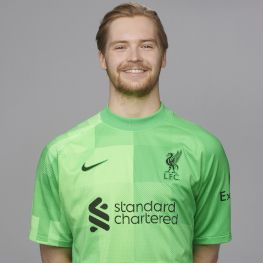
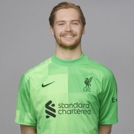
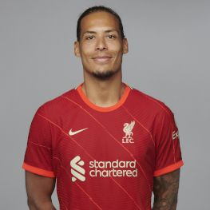
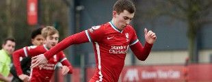
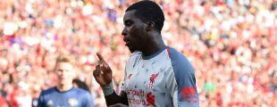

PLAYERS
Robbie Fowler previously held the record for quickest premier league
hatrick but is now taken over by one of Liverpools stars Sadio Mane
currently.The most bizzare injury?Not long after joining,Danish goalkeeper
Micheal Stensgaard dislocated his shoulder.Not though in a game but while
he was setting up an ironing board.Ian Rush is Liverpool’s greatest ever
goalscorer having netted 346 goals in 668 appearances. in the season
2020-2021 the liverpool squad has had...
GOALKEEPERS
Allison Becker

Adrian
Loris Karius
 Coaimhin Kelleher

Marcelo Pitaluga
Coaimhin Kelleher

Marcelo Pitaluga
DEFENDERS
Virgil van Dijk

Joe Gomez
Kostas Tsimikas
Andy Robertson
Ben Davies
Joel Matip
Rhys Williams
Nathaniel Phillips
Trent Alexander-Arnold
Neco Williams
Ibrahima Konate
MIDFEILDERS
Fabinho
Thiago Alcantar
James Milner
NabyKeita
Jordan Henderson
Alex Oxlade-Chamberlain
Curtis Jones
Ben Woodburn

Forwards
Roberto Firmimo
Sadio Mane
Mohamed Salah
Takumi Minamino
Diogo Jota
Divock Origi
Sheyi Ojo

Harvey Elliott
On loan
Sepp van den Berg
Photos by www.Liverpoolfc.com
Liverpool Managers
Genral Knowledge